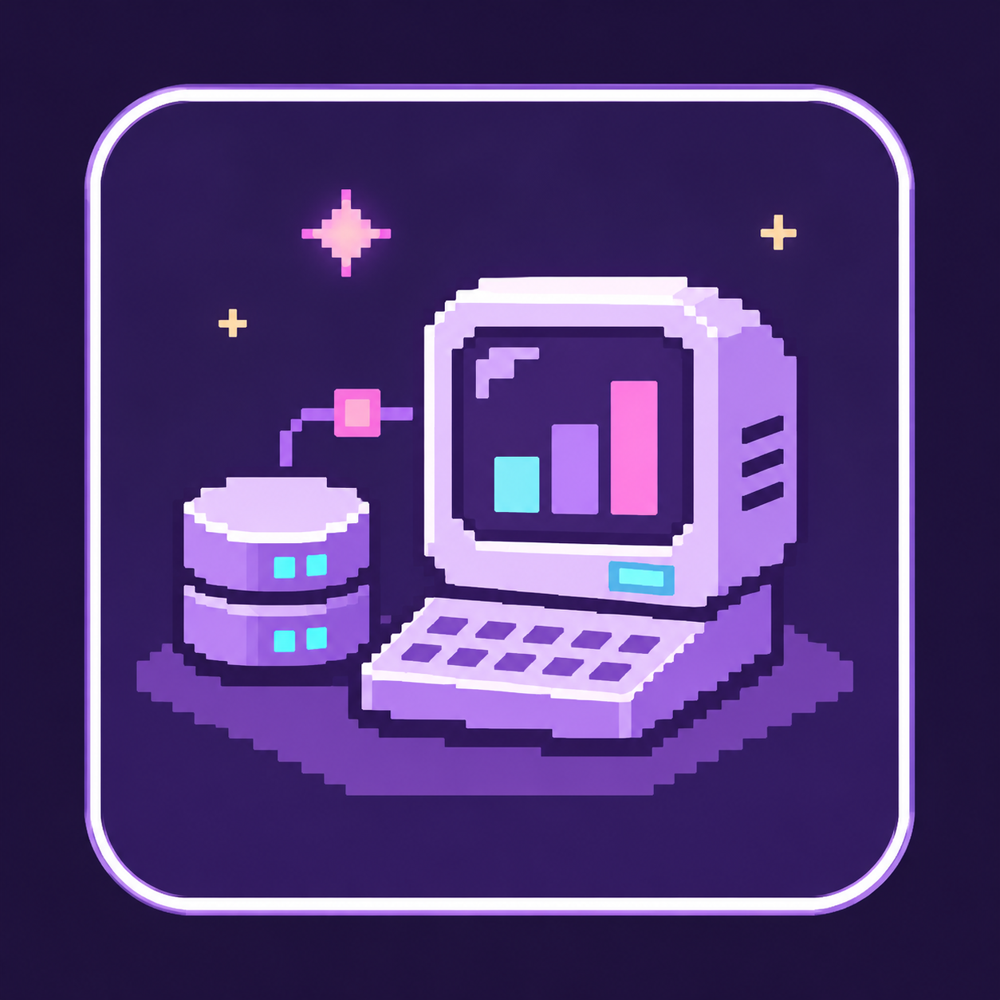
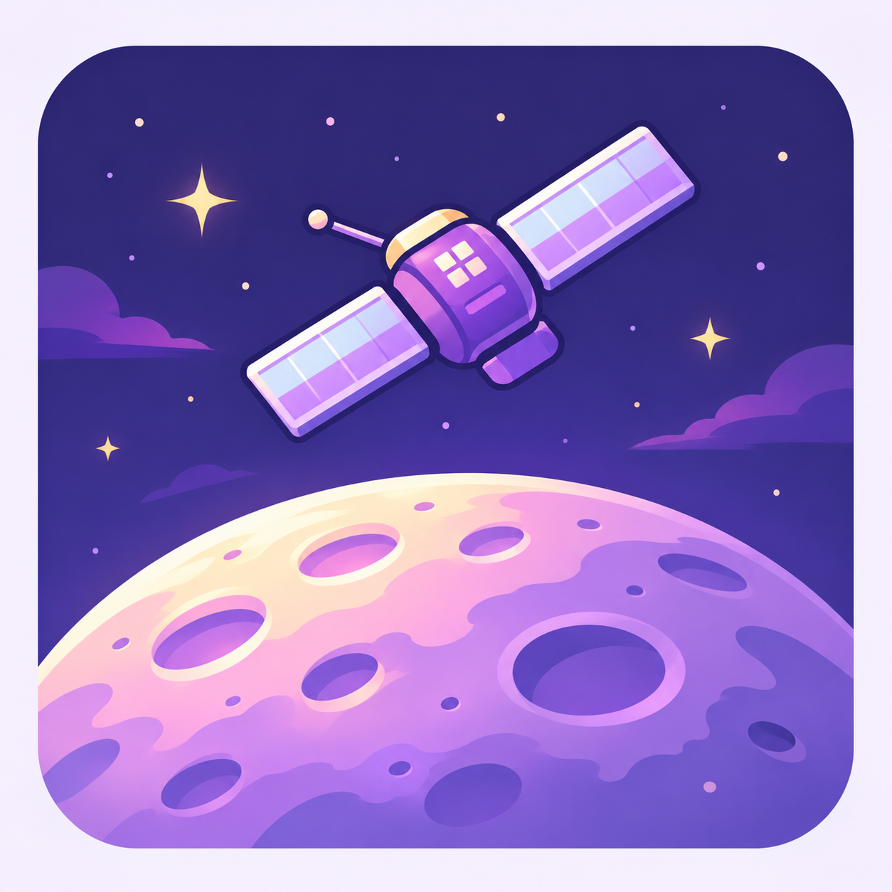
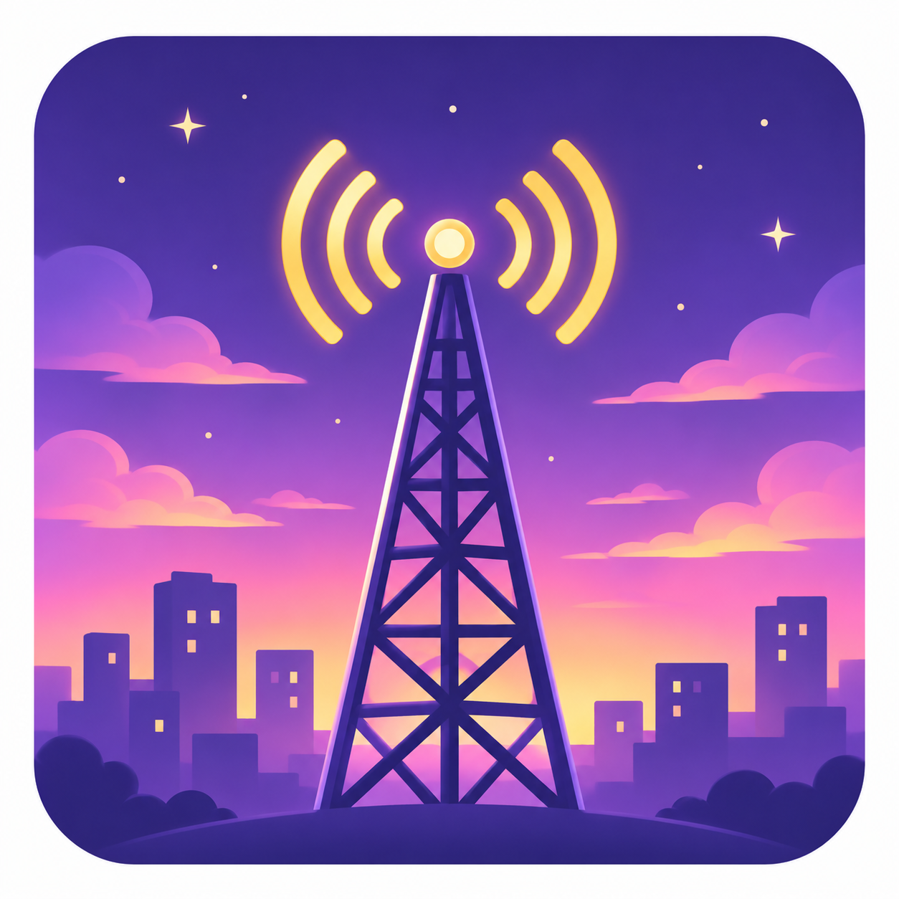
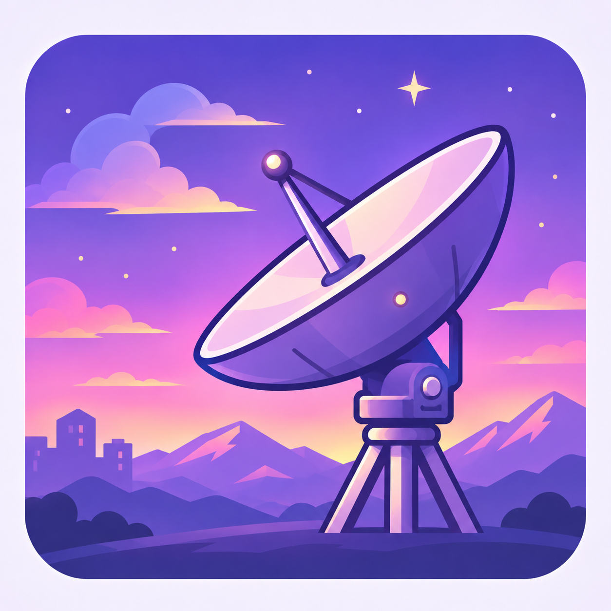

Euromedica Partner · Singapore (Remote)
AI CRM for clinic workflows, partnering with Euromedica.
Euromedica Partner · Singapore (Remote)
AI CRM for clinic workflows, partnering with Euromedica.

Data / IT Consultancy · Jakarta
Data science work in a data and IT consultancy.

NASA Ames affiliation · London
Asteroid disruption research through predictive modeling and large-scale simulation.

Telkomsel Partner · Jakarta
Real-time fraud detection and scalable AI systems, including RAG.
Fintech · Jakarta
ML fraud detection and operational dashboards for a 93M+ user wallet.

Indonesian Research Agency · Bandung
Applied ML to satellite climate and atmospheric data from 900+ weather stations.
MSc in Computational Science
Fully-funded LPDP scholarship
PG studies in Environmental Science
(Energy & Sustainability)
BSc in Earth Science and Technology
(Meteorology / Geospatial Data Science)
PyTorchTensorFlowScikit-learnXGBoostKerasOpenCVNetworkXRGCN / HGTRAGLangChainOpenAIVertex AIHugging FaceNLPNLTKspaCyGPT-4LlamaStable Diffusion
BigQueryPostgreSQLMySQLDBeaverPandasNumPyMatplotlibSeabornPlotly
PythonC++FastAPIFlaskDjangoVueReactVS CodeColabDockerKubernetesCloud FunctionsCompute VMsGit
✦ Like this website? I designed and built it myself! I also create portfolios, business websites, and digital wedding invitations. Explore Vowfable for designs and pricing.